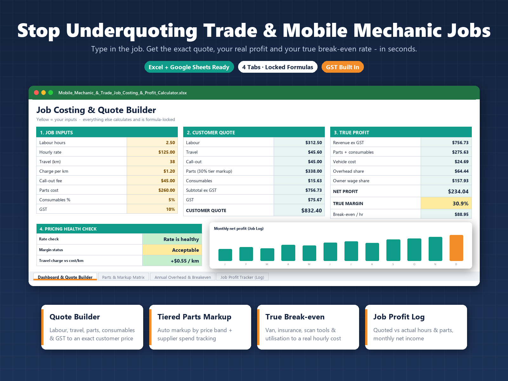

How to charge for travel and call-outs
"Free travel" is the most common way mobile businesses lose money on small jobs. Here's how to price it properly.
1. Work out your van cost per kilometre
Annual van costs / annual work kilometres. $16,000 / 30,000 km is about 53c per km before your time. Many operators land between 50c and 80c.
2. Remember your time
A 40 km round trip at city speeds is roughly an hour you can't bill. At a $119/hr target rate, that's $119 of time plus about $21 of van cost. On a $150 battery swap, you'd keep almost nothing.
3. Pick a simple model and stick to it
- Call-out fee ($45-$90) covering a set radius, e.g. 20-30 km. Customers understand it and it's easy to quote.
- Per-km charge above a base radius, e.g. $1.20/km round trip, for jobs further out.
- Minimum job charge, e.g. 1 hour labour, if you'd rather not itemise travel.
4. Group jobs by area
Offering a lower call-out fee for bookings in the suburb you're already in that day fills your schedule and cuts unbilled driving.

Want this for every job, not just your hourly rate?
The full Job Costing, Quoting & Profit Calculator (Excel + Google Sheets) builds an exact quote with labour, travel, tiered parts markup, consumables and GST, and shows your true profit on every job. It also tracks quoted vs actual hours in a 50-job log with monthly profit totals.
Get it - launch price 30% off